Image Gallery#
Visual reference for LBM-Suite2p-Python outputs and documentation.
Pipeline Outputs#
{kind=link}
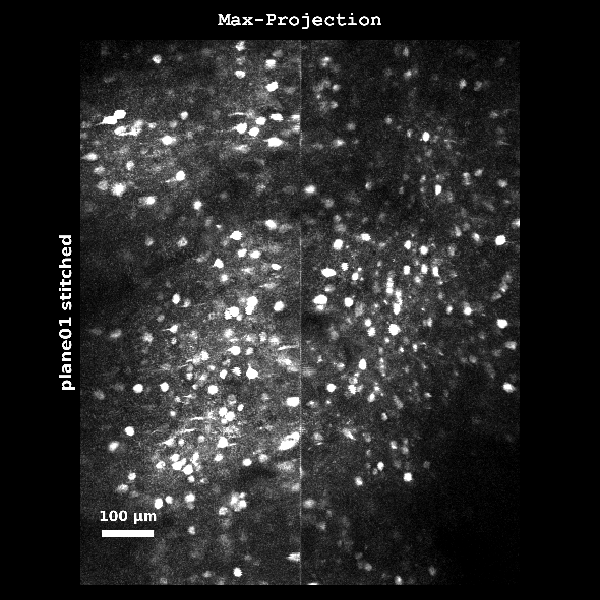
Maximum intensity projection from registered movie.#
{kind=link}
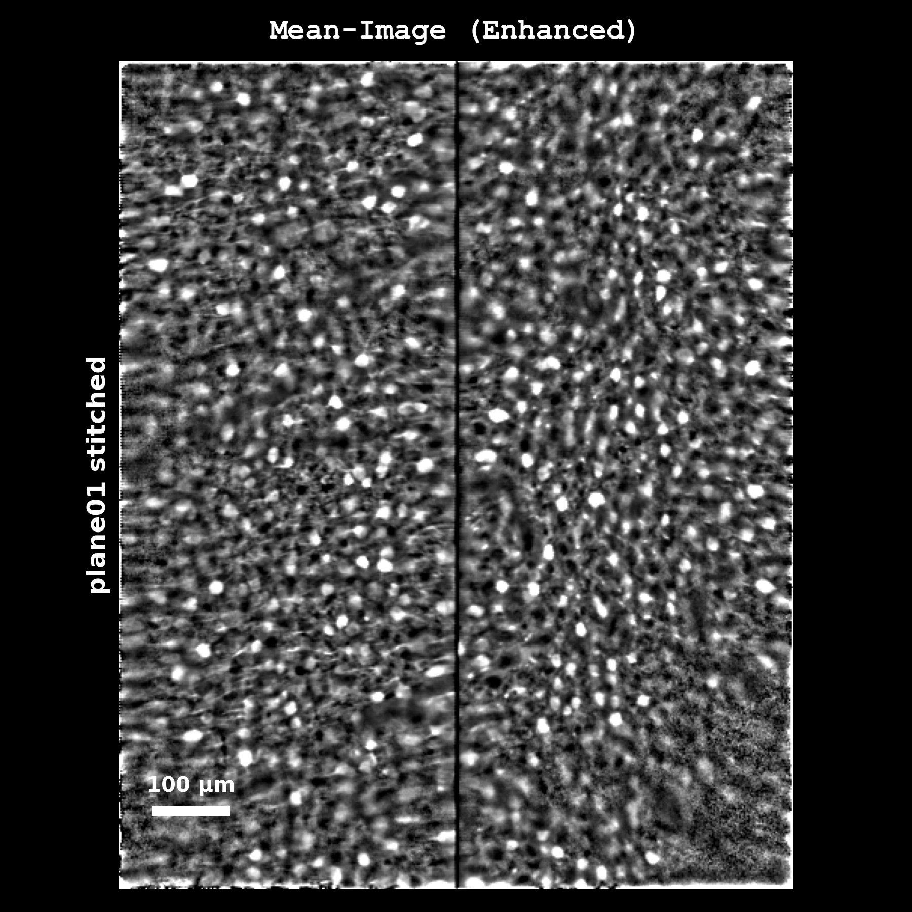
Enhanced mean image with median high-pass filter applied.#
{kind=link}
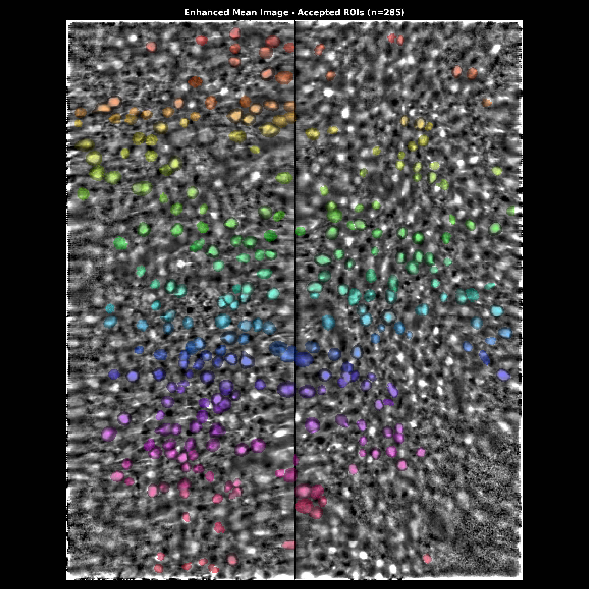
ROI masks overlaid on enhanced mean image.#
{kind=link}
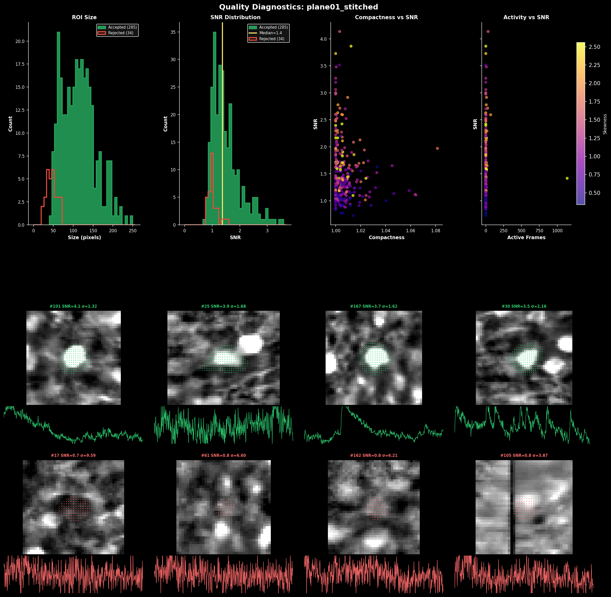
ROI quality metrics: size, SNR, compactness distributions.#
{kind=link}
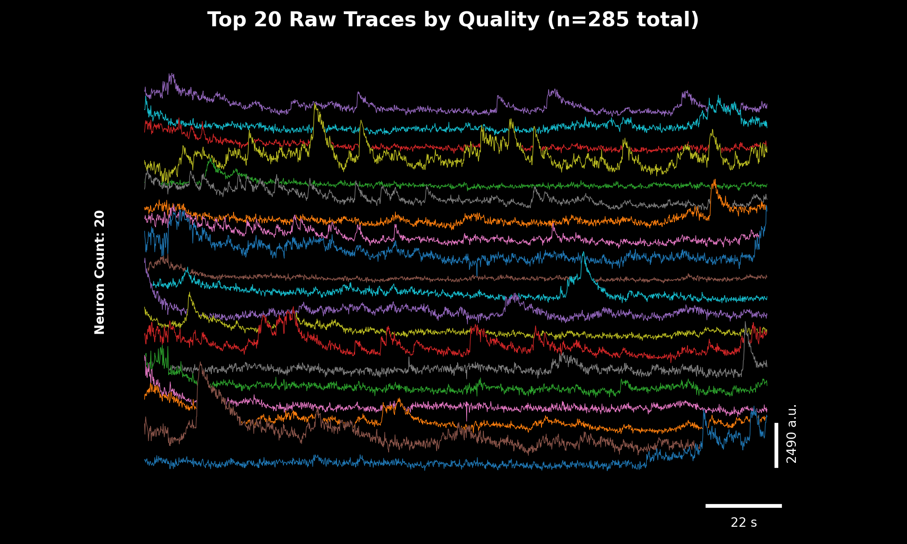
Raw fluorescence traces for top neurons by quality score.#
{kind=link}
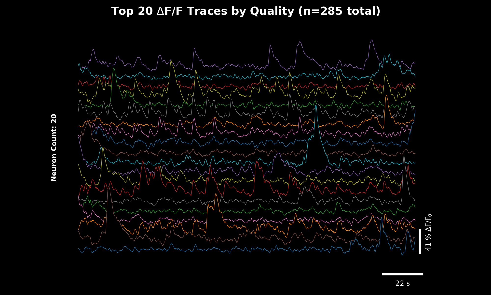
ΔF/F traces computed with rolling percentile baseline.#
ΔF/F Analysis#

Comparison of baseline estimation methods.#

Effect of window size on baseline estimation.#

Shot noise estimation across ROIs.#

Components of trace quality scoring.#
Projection Types#

Cellpose input images (cellpose_settings.img): meanImg, max_proj, max_proj / meanImg (default).#

Effect of spatial_hp_cp parameter values on cell boundary enhancement.#
Parameter Effects#
{kind=link}
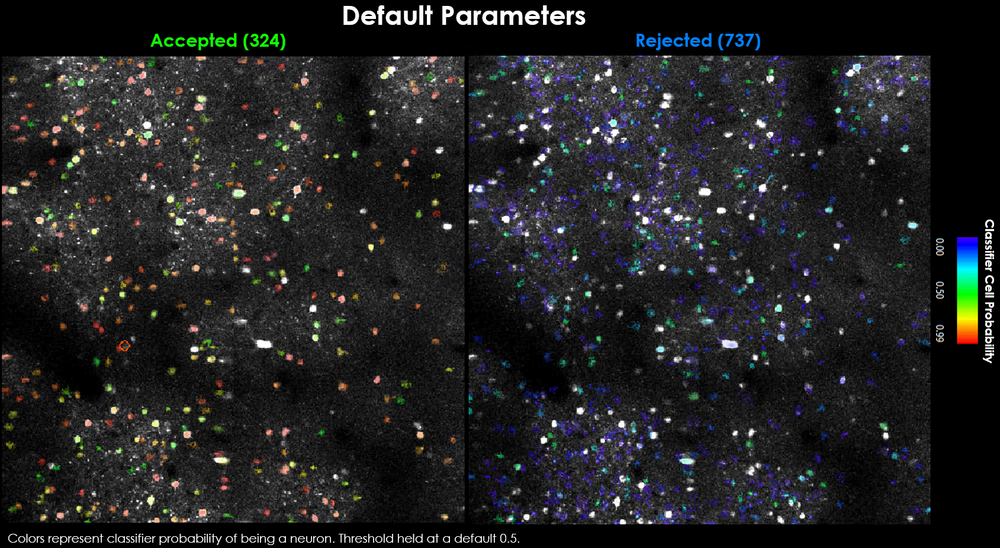
Segmentation with default parameters.#
{kind=link}
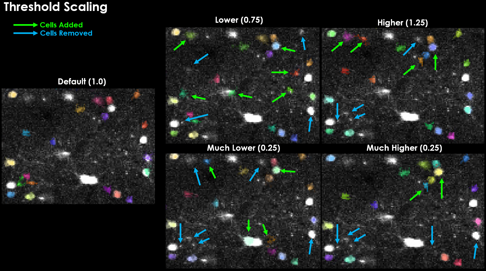
Effect of threshold_scaling on detection.#
{kind=link}
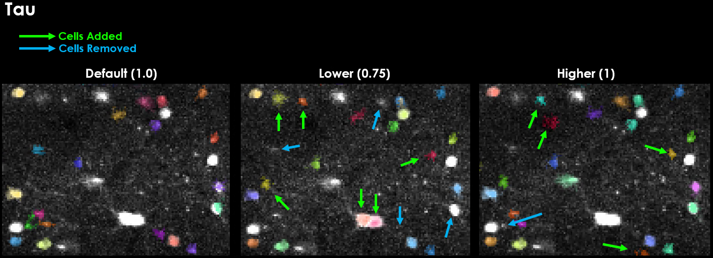
Effect of tau on temporal binning and detection.#
{kind=link}
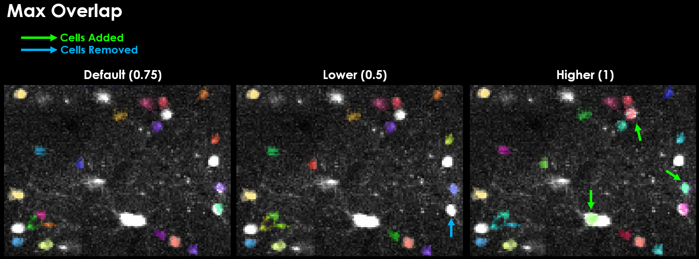
Effect of max_overlap on ROI acceptance.#
Diagrams#
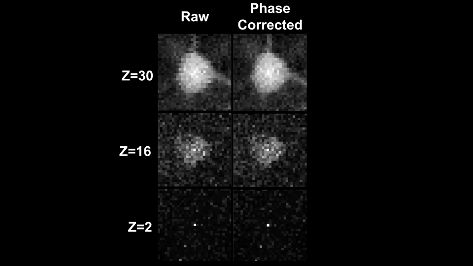
Line offset correction diagram.#
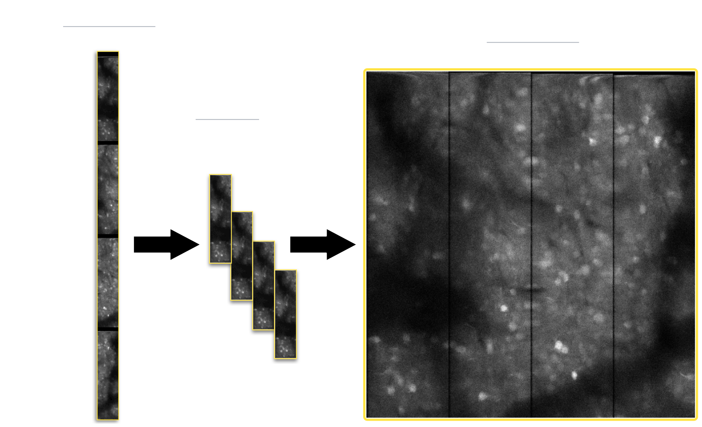
ROI retiling diagram.#
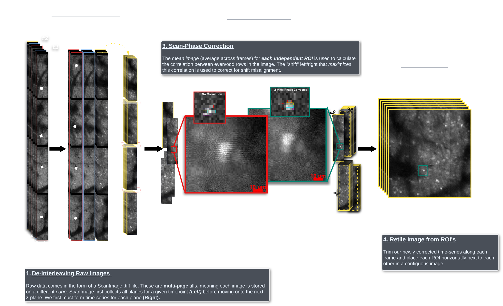
Pipeline flow diagram.#
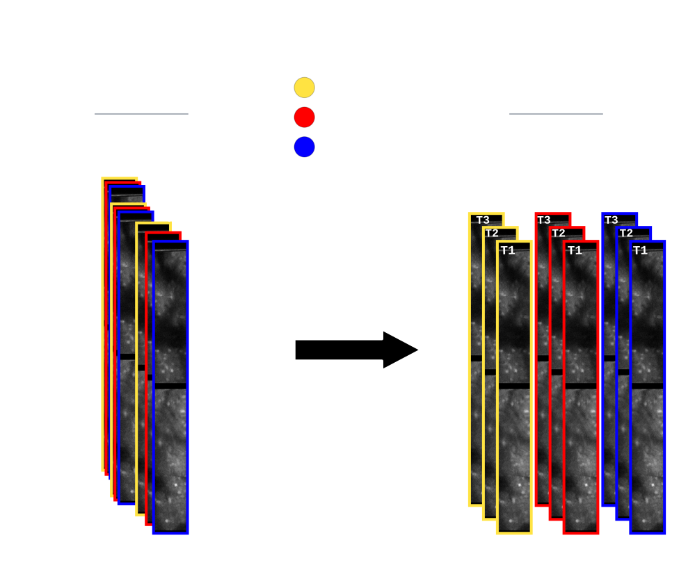
Z-plane deinterleaving diagram.#